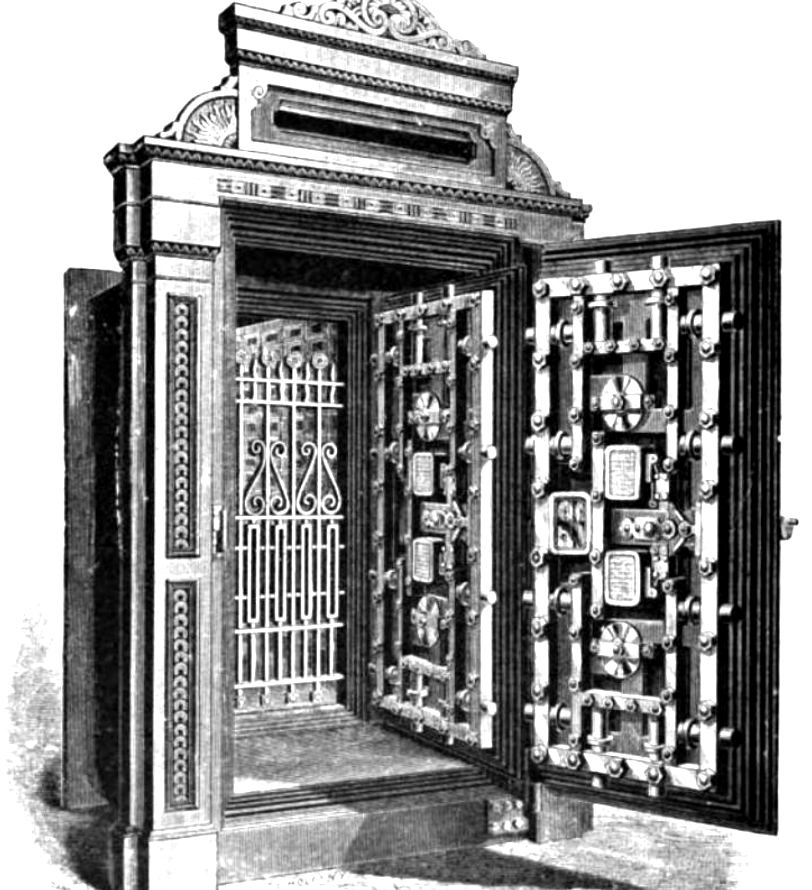

Как сайт узнаёт пользователя
Аутентификация отвечает на вопрос «кто это?», авторизация — «что ему можно?». Разберём хранение паролей, сессии и закрытые страницы.

Пароли хранят только как хеш
Хеш — необратимый отпечаток. Если базу украдут, настоящих паролей в ней не будет.
from werkzeug.security import check_password_hash, generate_password_hash
stored = generate_password_hash("секрет123", method="pbkdf2:sha256")
print("В базе лежит:", stored[:40] + "...")
print("Верный пароль:", check_password_hash(stored, "секрет123"))
print("Неверный пароль:", check_password_hash(stored, "qwerty"))
print("Два хеша разные:", stored != generate_password_hash("секрет123", method="pbkdf2:sha256"))Хеши одного пароля различаются из-за случайной «соли». Поэтому одинаковые пароли в базе не выглядят одинаково. Обычный md5 или sha256 без соли и замедления для паролей не подходит. В реальном приложении метод можно не указывать: библиотека выберет надёжный вариант по умолчанию.
Сессия: как сайт помнит вход
HTTP не помнит прошлых запросов. После входа сервер выдаёт браузеру cookie, и браузер прикладывает её к следующим запросам.
from functools import wraps
from flask import Flask, abort, redirect, request, session, url_for
from werkzeug.security import check_password_hash, generate_password_hash
app = Flask(__name__)
app.secret_key = "только-для-примера" # в реальном проекте берите из переменной окружения
USERS = {"ernar": generate_password_hash("секрет123", method="pbkdf2:sha256")}
def login_required(view):
@wraps(view)
def wrapper(*args, **kwargs):
if "user" not in session:
return redirect(url_for("login"))
return view(*args, **kwargs)
return wrapper
@app.route("/login", methods=["POST"])
def login():
name = request.form.get("name", "")
stored = USERS.get(name)
if stored is None or not check_password_hash(stored, request.form.get("password", "")):
abort(401)
session["user"] = name
return redirect(url_for("profile"))
@app.route("/logout", methods=["POST"])
def logout():
session.clear()
return redirect(url_for("login"))
@app.route("/profile")
@login_required
def profile():
return f"Привет, {session['user']}!"
client = app.test_client()
print("Без входа:", client.get("/profile").status_code)
print("Неверный пароль:", client.post("/login", data={"name": "ernar", "password": "x"}).status_code)
client.post("/login", data={"name": "ernar", "password": "секрет123"})
print("После входа:", client.get("/profile").text)
client.post("/logout")
print("После выхода:", client.get("/profile").status_code)На что обратить внимание
- Сессия Flask подписана ключом
secret_key, но не зашифрована: не храните в ней секреты. - При неверном логине и при неверном пароле ответ одинаковый, чтобы нельзя было подобрать существующие логины.
- Выход выполняется через POST, чтобы его нельзя было вызвать простой ссылкой с чужого сайта.
- На настоящем сайте вход должен работать только по HTTPS, а число попыток стоит ограничить.
Авторизация в Django
В Django уже есть пользователи, хеширование паролей, сессии и готовые страницы входа.
from django.contrib import admin
from django.urls import include, path
urlpatterns = [
path("admin/", admin.site.urls),
path("accounts/", include("django.contrib.auth.urls")),
]from django.contrib.auth.decorators import login_required
from django.shortcuts import render
@login_required
def profile(request):
return render(request, "profile.html", {"user": request.user})LOGIN_URL = "login"
LOGIN_REDIRECT_URL = "profile"
LOGOUT_REDIRECT_URL = "login"Шаблон входа нужно создать самому: templates/registration/login.html. Выход в современных версиях Django работает только через POST, поэтому делайте его формой с кнопкой, а не ссылкой.
Права доступа
После входа важно проверять, что пользователь работает именно со своими данными.
Частая ошибка — проверить только сам вход. Если адрес /tasks/5/delete доступен любому вошедшему, чужую задачу можно удалить, просто подставив номер. Всегда проверяйте владельца на сервере:
from django.contrib.auth.decorators import login_required
from django.shortcuts import get_object_or_404, redirect
from django.views.decorators.http import require_POST
from .models import Task
@login_required
@require_POST
def delete_task(request, pk):
task = get_object_or_404(Task, pk=pk, owner=request.user)
task.delete()
return redirect("index")Источники
Ссылки проверены .
Дальше: REST API
Сервер может отдавать не только страницы, но и данные.